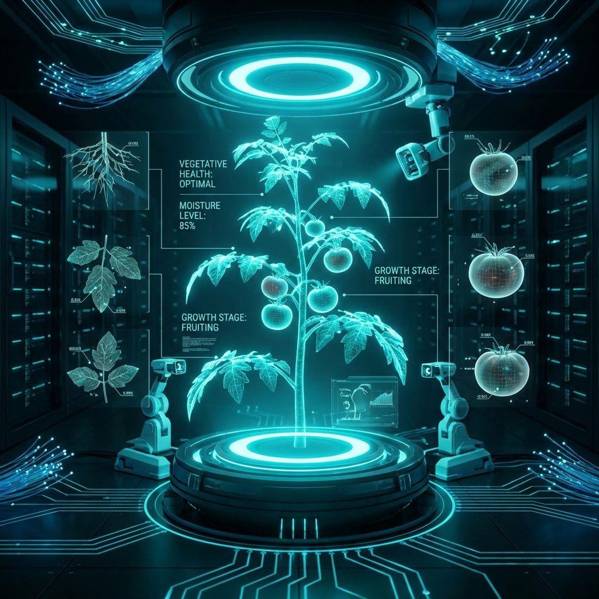
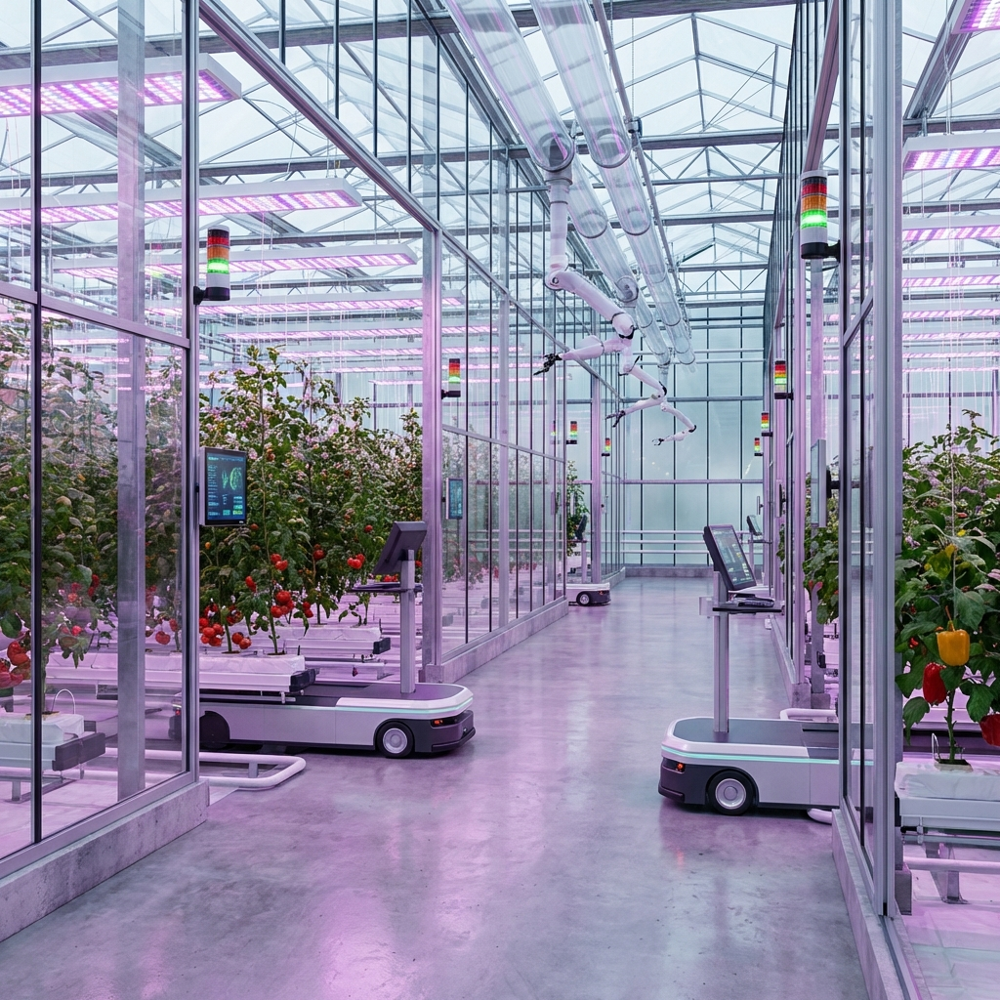
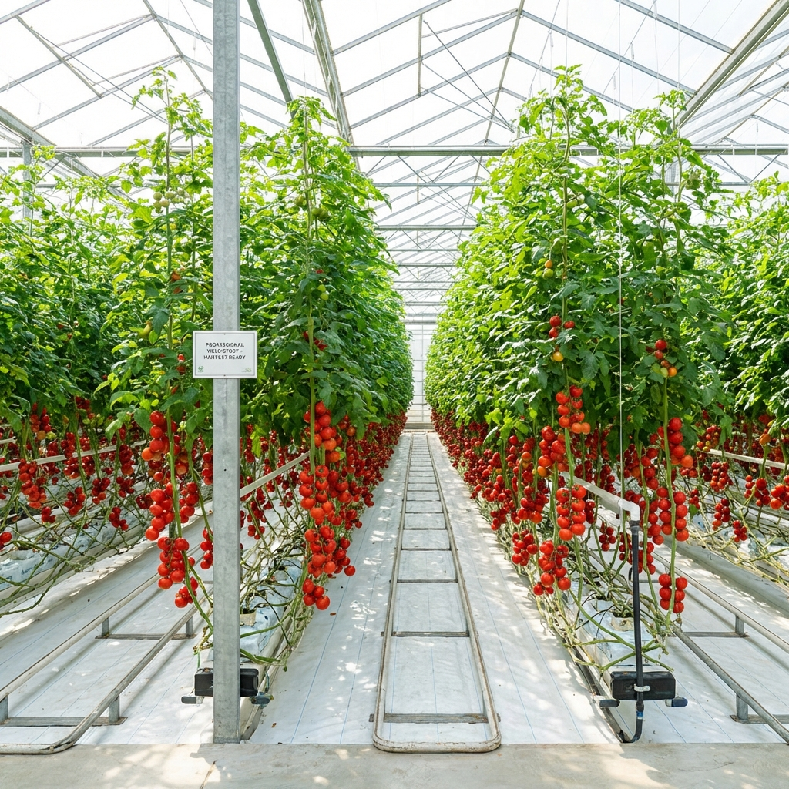

Precision Horticultural Analysis
Digital models track plant development across all Growth Stages. The system detects anomalies like fertigation failures or pest stress.
Predictive indicators support timely harvest decisions by identifying the Optimal Harvest Window.

Automated systems regulate light, temperature, and humidity with differentiated strategies.
Irrigation and nutrient delivery are dynamically adjusted based on Substrate Conditions, ensuring precise fertigation with minimal intervention.

Coordination of environmental control to achieve Uniform Plant Growth and maximize fruit number.
Synchronized fruit development enables uniform harvesting, improving consistency and overall production efficiency.
